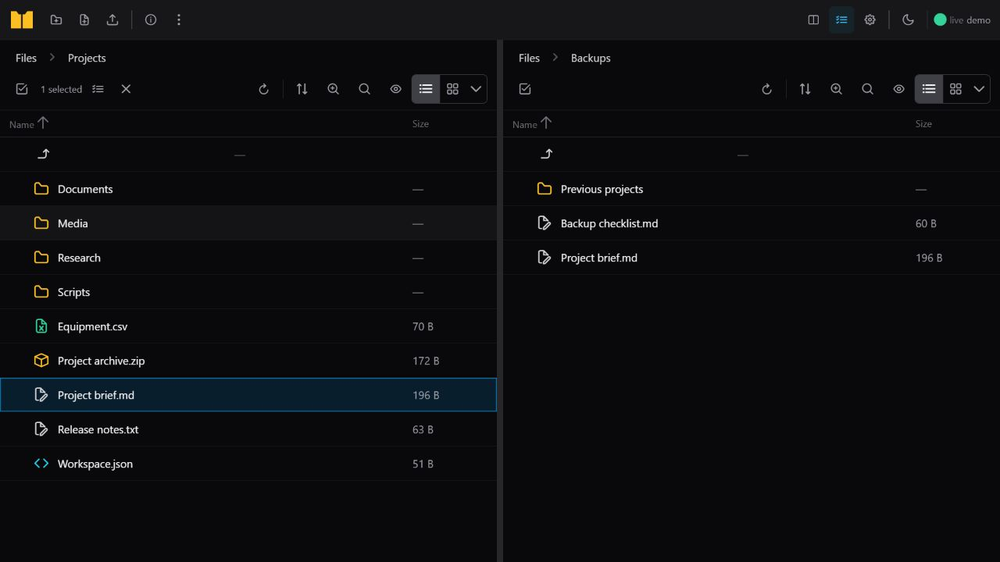

BROWSE & ORGANISE
Go straight to your files.
Browse configured roots as soon as you open them. Use a list, a grid or two independent panes. Filter the current folder or search filenames beneath it.
Explore file managementSELF-HOSTED. LINUX FIRST.
Open a browser. Get to your files. WebFile brings browsing, previews and file operations to your Linux server, using the permissions you already have.
Open source / MIT · Linux AMD64 · Your own server

01 / ROOM TO WORK
From a quick edit to a long transfer, keep the work in one browser window.
Browse configured roots as soon as you open them. Use a list, a grid or two independent panes. Filter the current folder or search filenames beneath it.
Explore file managementQueue resumable uploads, follow background operations and cancel work you no longer need. Undo the latest completed copy or move for up to one hour.
Understand tasks and UndoOpen images in a gallery, listen to audio, inspect archives and edit text or code with Monaco. Generate video thumbnails on the server.
See preview optionsWebFile reads the filesystem directly. Directory events tell the browser to refresh its view; they don’t maintain a second model of your files. There is no initial catalogue scan to wait for.
03 / MAKE YOURSELF AT HOME
Install the Linux AMD64 package on Debian or Ubuntu with systemd. Bring your local accounts, configure your roots and set up TLS.
7-Zip for archives · FFmpeg for video thumbnails
Check your installed version
webfile versionVerify the checksum before installing. No Node.js or Go toolchain needed on the runtime host.
OPEN SOURCE / MIT LICENSE
Read the code, report a bug or help shape what comes next.